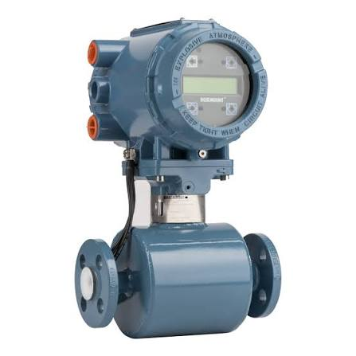

FLocculent ➔ Mixing Machine 1
General Information
| Equipment Type | Flow Sensor |
|---|---|
| Manufacturer | Rosemount |
| Model | 8705 |
| Target Fluid | Water / Floc |
Technical Specifications
| Flow Range | 0 - 500 L/min |
|---|---|
| Max Pressure | 10 Bar (1.0 MPa) |
| URV | 300 L/min |
| LRV | 0 L/min |
| Output Signal | 4-20mA / Pulse |
| Power Supply | 24V DC |
Wiring Diagram
Brown: +24V DC
Blue: 0V
Black: Output 1 (Flow rate)
White: Output 2 (Pulse/Alarm)
Maintenance
| Last Calibrated | 2026-09-09 |
|---|---|
| Installed By | Munkhsaikhan (Maintenance) |
| Note | Clean filter every 6 months |